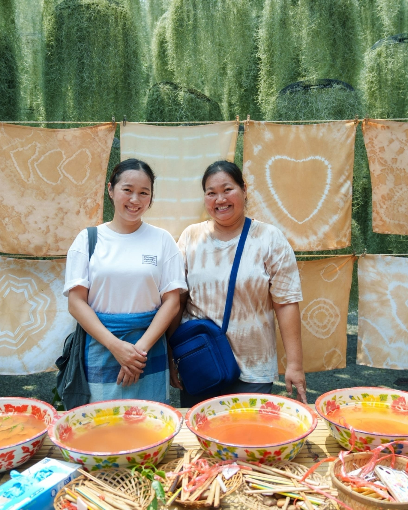
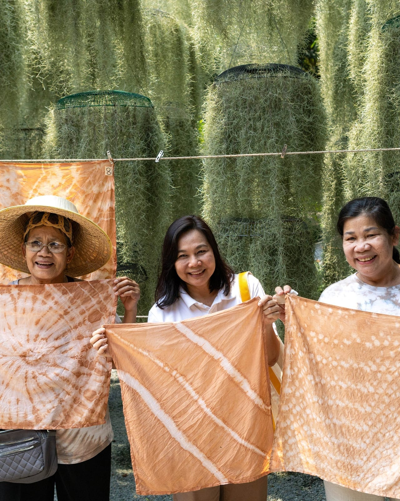
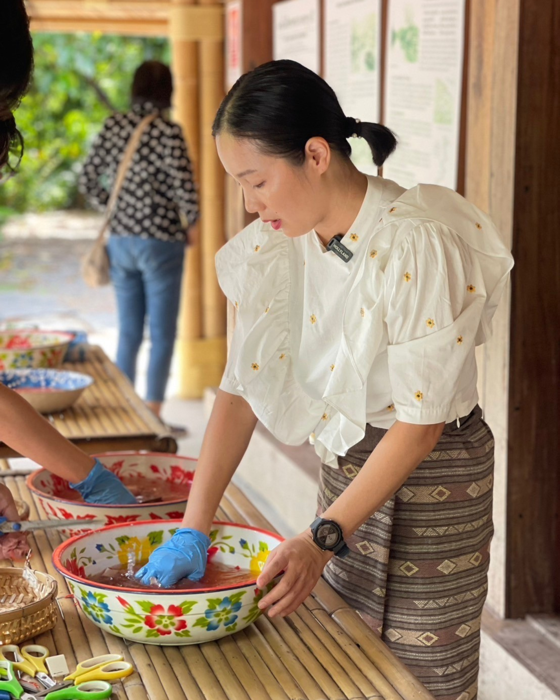
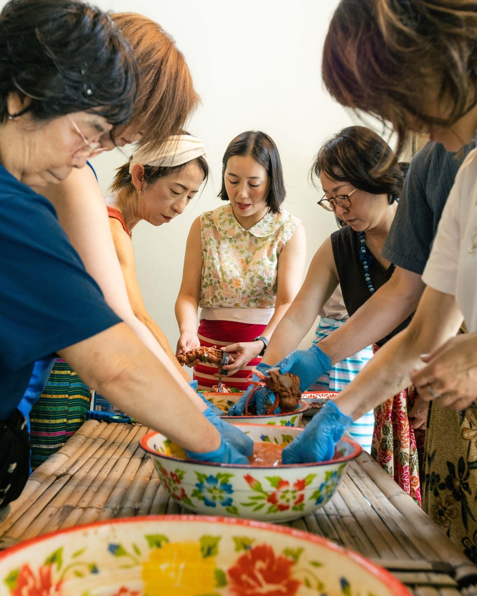
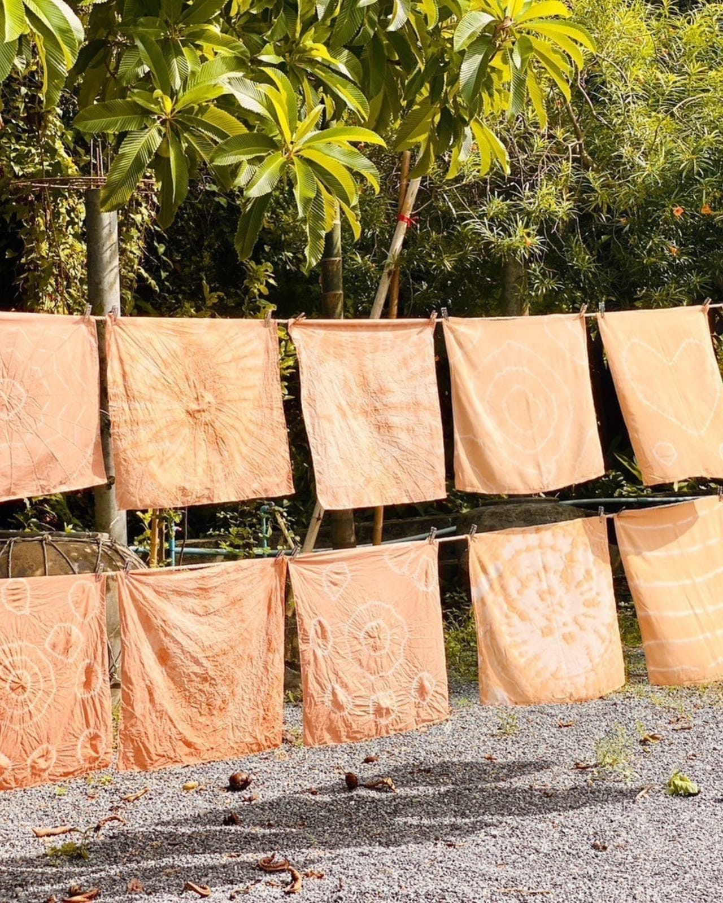

Experiences · Workshop
Tie-dye workshop
Back to all experiences

- Format
- Private workshop, 1–5 guests per group
- Price
- 2,500 THB per group
- Duration
- About 1 hour
- Dye source
- Natural color from the garden's lychee leaves
- Larger parties
- Multiple groups can be arranged
Dye your own cloth the traditional way — folded, bound, and dipped by hand, using color drawn from the garden's own lychee leaves instead of synthetic dye.
The lychee orchard doesn't just give the garden its name; it gives this workshop its color. Leaves are boiled down into a natural dye bath, and from there it's classic shibori technique — fold, twist, bind, dip — with a Poomjai Garden instructor guiding you through each pattern. You take your finished piece home with you.



